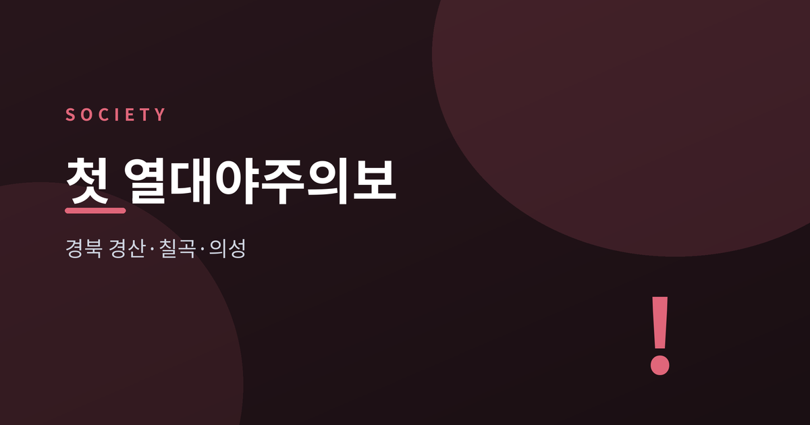
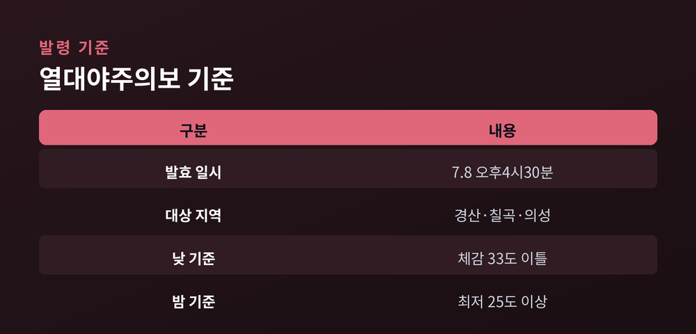
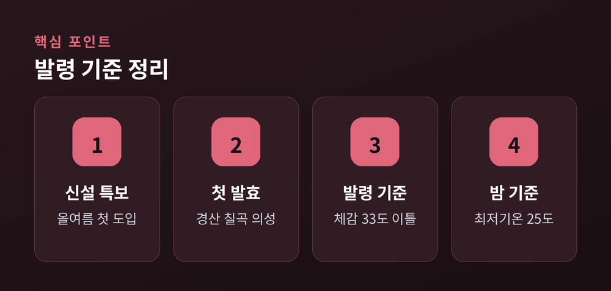
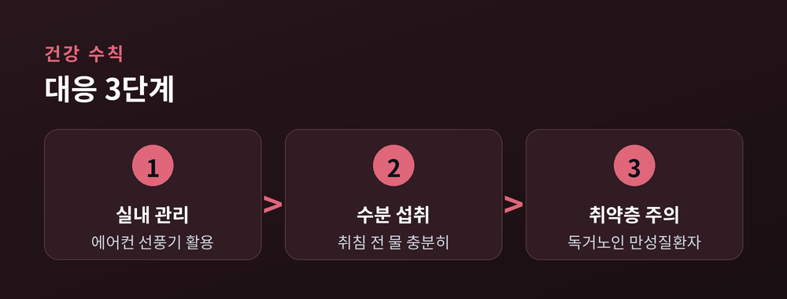

신설 특보, 첫 발효

기상청은 2026년 7월 8일 오후 4시 30분을 기해 경북 경산시, 칠곡군, 의성군에 '열대야주의보'를 발효했습니다. 이는 기상청이 열대야주의보를 신설한 이후 처음 내려진 특보입니다. 폭염이 밤까지 이어지는 상황에 대응하기 위해 올해 새로 도입된 제도가 실제로 발령되기는 이번이 처음입니다.
"기상청은 8일 오후 4시30분을 기해 경산시와 칠곡군, 의성군에 열대야주의보가 발효됐다고 밝혔다." — 경향신문

열대야주의보는 일 최고 체감온도가 33도 이상인 날이 이틀 이상 지속할 것으로 예상되고, 같은 기간 밤(오후 6시~다음 날 오전 9시) 최저기온이 25도 이상인 날이 하루 이상 예상될 때 발령됩니다. 다만 지역 특성을 고려해 특별·광역시와 인구 50만 이상 도시, 해안·도서 지역은 26도, 제주도는 27도를 기준으로 합니다. 뉴스핌에 따르면 이번 조치는 "폭염 대응을 위해 올해 첫 도입된 특보"로 소개됐습니다.
| 구분 | 내용 |
|---|---|
| 발효 일시 | 7월 8일 오후 4시30분 |
| 대상 지역 | 경산·칠곡·의성 |
| 낮 기준 | 체감온도 33도↑ 이틀 |
| 밤 기준 | 최저기온 25도↑ |

경향신문 보도에 따르면 최근 5년간 전국 평균 폭염·열대야 일수는 1970년대보다 2~3배가량 늘었습니다. 낮 동안 쌓인 더위가 밤에도 해소되지 않으면 신체가 회복할 시간을 갖지 못해 온열질환 위험이 커집니다. 기상청이 올해부터 열대야주의보와 함께 폭염중대경보(체감 38도 이상)를 새로 마련한 것도 이런 흐름 때문입니다. 특보 체계를 세분화해 더 이른 단계에서 주의를 환기하려는 취지로 볼 수 있습니다.

내륙 분지 지역인 경북 경산·칠곡·의성은 밤에도 열기가 잘 빠지지 않는 지형적 특성이 있어, 이번 특보가 다른 내륙 지역으로 확산될 가능성도 배제하기 어렵습니다. 기상청은 에어컨과 선풍기로 실내를 시원하게 유지하고 잠들기 전 수분을 충분히 섭취하며, 카페인과 알코올은 피할 것을 당부했습니다. 특히 혼자 사는 노인과 만성질환자 등 건강 취약계층은 밤사이 체온 조절이 어려울 수 있어 각별한 주의가 필요합니다.
새 특보가 생기고 처음 발령됐다는 사실 자체보다, 그 배경에 있는 밤더위의 일상화에 주목할 필요가 있습니다. 특보 신설은 위험을 더 세밀하게 알리기 위한 조치인 만큼, 앞으로 비슷한 발령이 다른 지역에서도 이어질 가능성을 차분히 지켜볼 시점입니다.